Creating Your First Report¶
Selecting Data Sources¶
To create a report, click the “+” Button beside the Reports Tab. This will create a new report and place us in Designer mode.
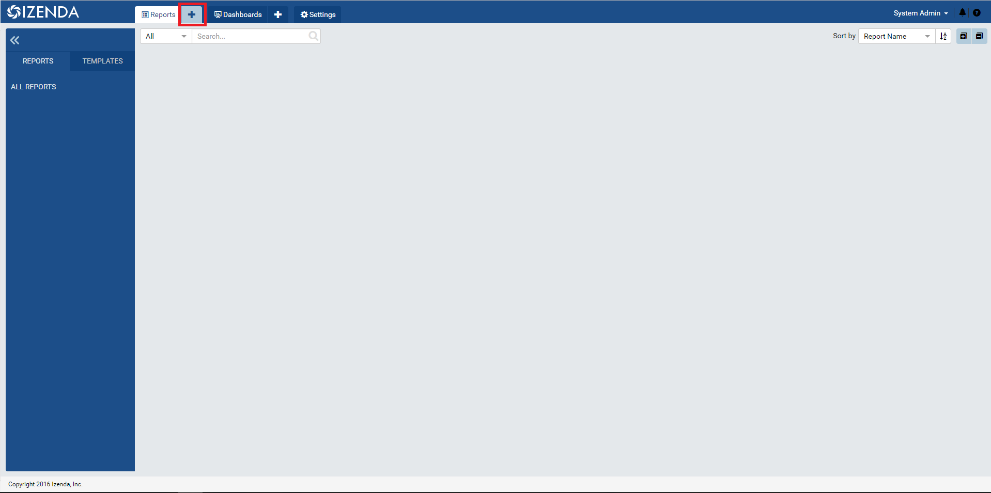Fig. 372 Creating a new report
Select your data sources. For this report, we are going to use the Order Details and Orders tables. On the Join Panel, Create an inner join on OrderID.
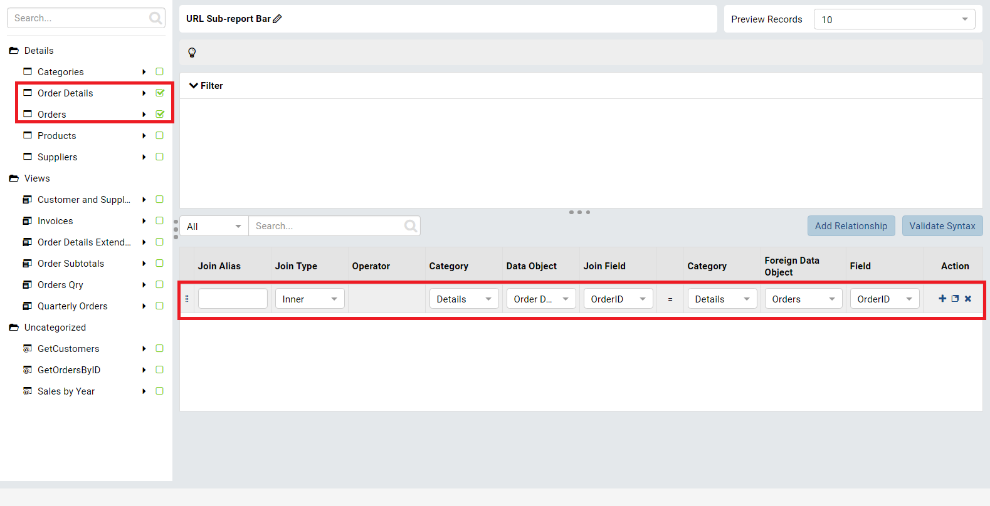Fig. 373 Selecting Data Sources
Designing A Report¶
Once your data sources are selected, use the blue left-hand panel to navigate to the Fields page and you’re ready to start creating reports! The report body will be constructed in the green box in the image below.
Note
When you click on the Fields button, this panel automatically condenses to enhance screen real-estate. To expand this panel, click the “Desk Drawer” or “Hamburger” in the upper left hand corner of the panel.
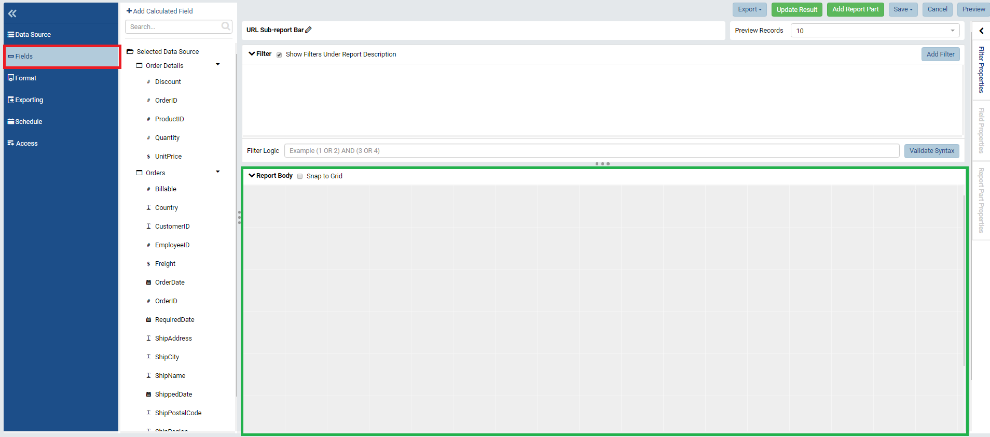
Report Parts¶
By default, there may be an empty report part, or tile, present when you navigate to this grid. These report parts are the smallest units of a report and allow you to build reports modularly with ease.
If there isn’t a report part present, simply left click on the grid and one will appear.
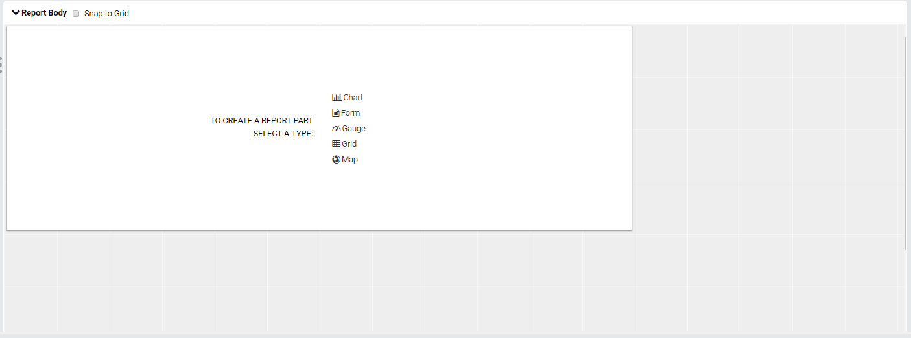You can always resize a report part by grabbing an edge and pulling/pushing it. Contents on the tile will scale accordingly.
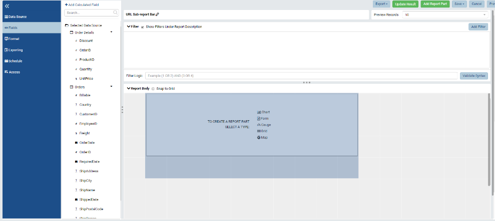Let’s rescale our report part to be a 3 x 5 rectangle by counting the number of grid squares the tile takes up.
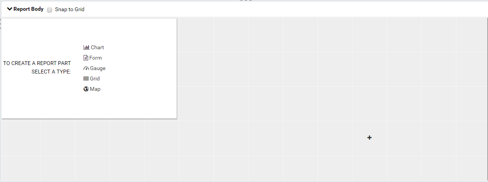
Choosing A Report Part Type¶
Now that we have our report part, lets assign a type to it. The five main report types are Charts, Forms, Gauges, Grids, and Maps, all of which are outlined in detail on the User Interface Overview. The report part types available will vary depending on the rights given to you by your administrator. Simply click on your desired type on the report part to assign the type.
Note
Once you’ve assigned a type, you cannot change it.
-
For this example, select Chart.
{kind=link}
Configuration Mode¶
Once you select your report part type type, you’ll see that it has “flipped” to Configuration Mode. Configuration Mode allows you to configure the data sources linked to your report part to create all of your data visuals. In the red box below, you’ll see all the configurable parts of the report part. In the green box below, you’ll see a preview of the front (the displayed portion) of the report part.
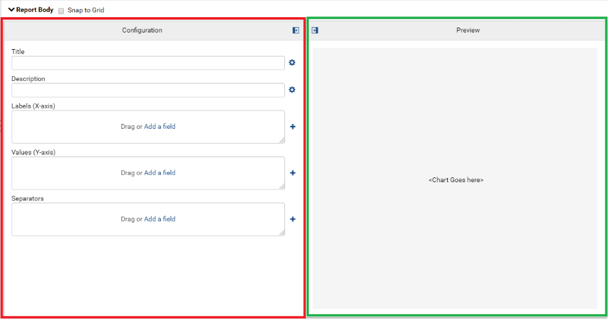
By default, Charts are defined as line graphs and, therefore, the configuration properties are configured to define line graphs (X-Axis, Y-Axis). To change graph types, direct your attention to the Report Part Properties panel on the right, ensure the General Info menu is open, and select your chart type in the dropdown (see below).
Note
Once you’ve assigned a chart type, you can always change it. Fields already present will auto configure to your chart change but further tweaking will most likely be necessary to create your desired chart.
For this example, we will change our chart type to a Bar Chart.
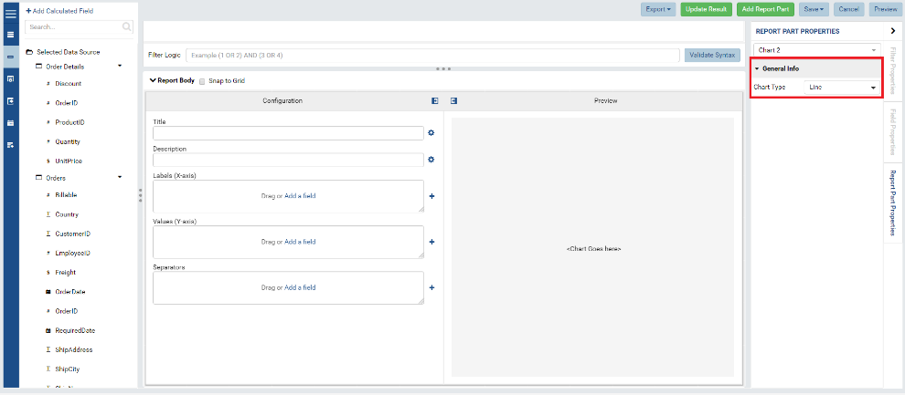
Adding Fields In Configuration Mode¶
To add a field to a configuration property, you can click the words “Add a Field” and a field selection dialogue will appear.
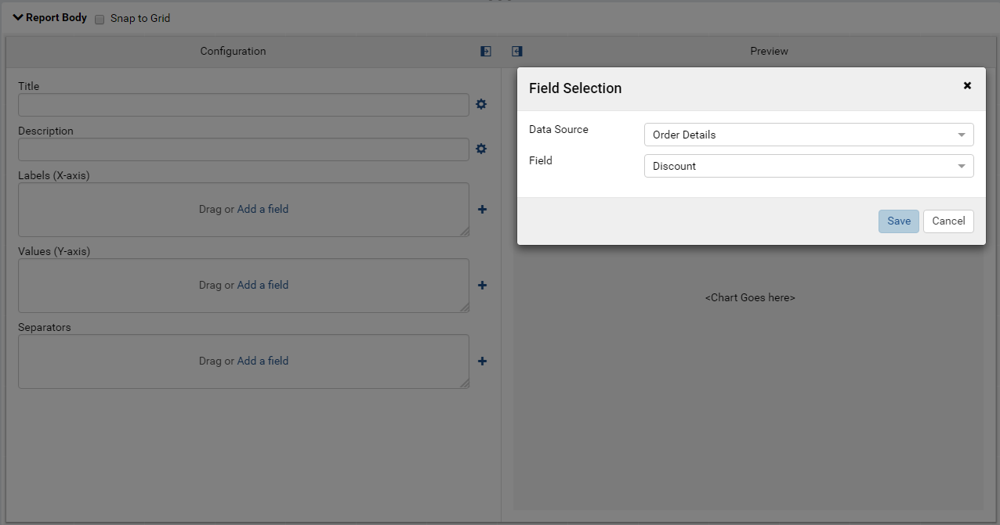Likewise, you can drag fields from the white left hand panel and drop them into one of the field boxes. Try dragging and dropping OrderID into the X-Axis box.
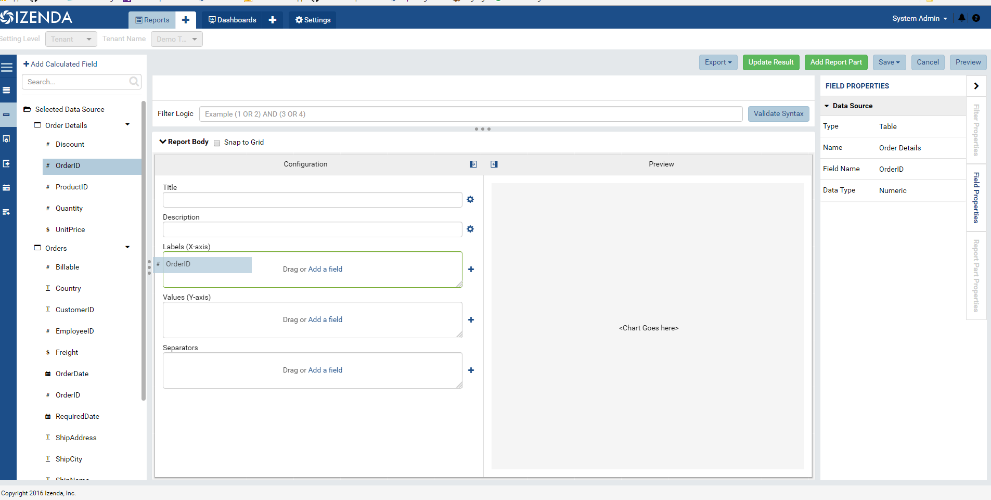
Fields can easily be moved from one to another and even rearranged. Once you have OrderID in the X-Axis box, try dragging it from the X-Axis box to the Y-Axis box. If you wish to delete a field, simply press the “x” button beside it. This will not affect your actual data.
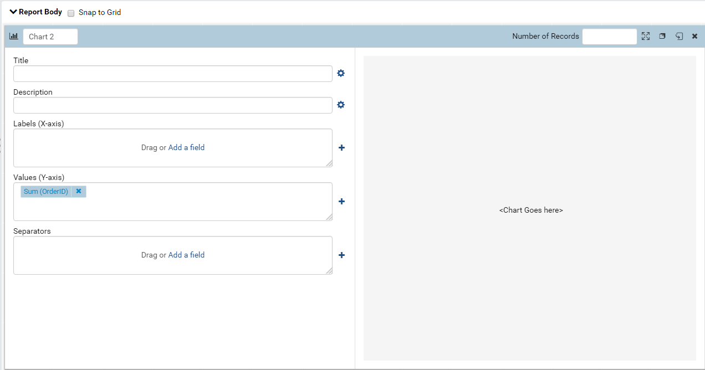
If you look at the right-hand panel, you’ll notice that the entire menu has changed! When a field is added to report part, this panel automatically switches from Report Part Properties to the Field Properties of the selected field.
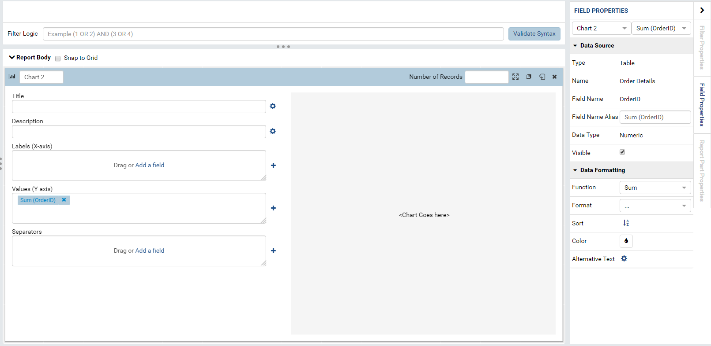
To return to the Report Part Properties, click the tab on the far right-hand side.
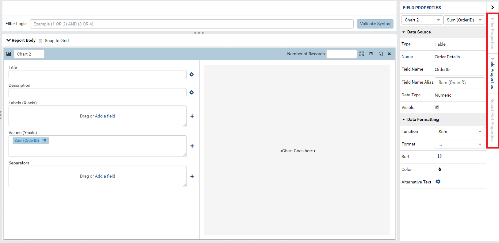
The selected field is the field highlighted on the configuration panel on the report part. This is generally the last report part you added or moved. If you wish to view the field properties of another field, simply click the other field in the configuration panel. In the image below, I’ve added an additional field to show the difference between a selected field and an unselected field.
{kind=link}
Let’s go ahead and remove everything from our configuration boxes. We’re going to create a bar chart that shows the number of orders per country so add Country in the X-Axis box and OrderID in our Y-Axis box.
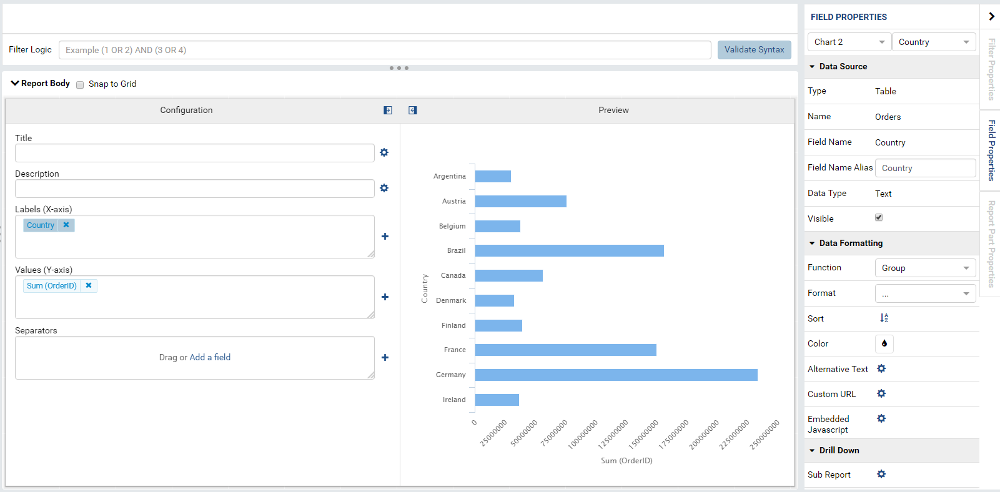
Presto! We’ve made a chart that doesn’t make sense. Why? If you look at the Y-Axis box, you’ll see that the Sum operator has been performed on OrderID. This means that every Order ID was added together for each country (e.g. ID Number 1001 and ID Number 1002 are added together to make 2003). What we really want to do is count the number of orders for each country, in turn, counting the number of unique OrderIDs that exist for each country.
- To change the operation performed on OrderID, select Sum(OrderID) from the Configuration panel. On the Field Properties panel, navigate to Data Formatting and find the dropdown labeled “Function.” Select “Count Distinct.” Presto! A usable chart.
Finishing Work On A Report Part¶
Once you’ve completed your work on a report, you need to flip it back to the front of the tile for the work to be saved. For good measure, click on the green Update Result button at the top right half of the page.
To flip a report part, hover over the top of the report part and a blue navigation bar should appear on top of the grey Configuration Panel Label that says “Configuration” and “Preview.”
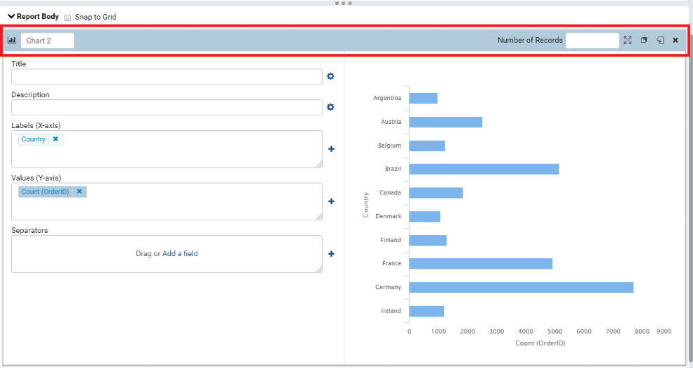On the right-hand side of this navigation bar, you’ll see 4 icons (from left to right: Full-Screen, Copy, Switch To Preview Mode, and Delete). Hover over each button to see a tooltip message appear with the button’s name/function. Once you’re familiar with these buttons, click the Switch To Preview Mode button.
For more on each individual buttons’ functionality, check out our Report Part Menu guide for more information.
Moving Report Parts and Returning to Configuration Mode¶
Now that we’ve created 1 report part, we’ll certainly want to create more and, therefore, we may want to change their orientation on the page. To move a report part, hover over the top of the report part until the blue tile navigation pane returns.
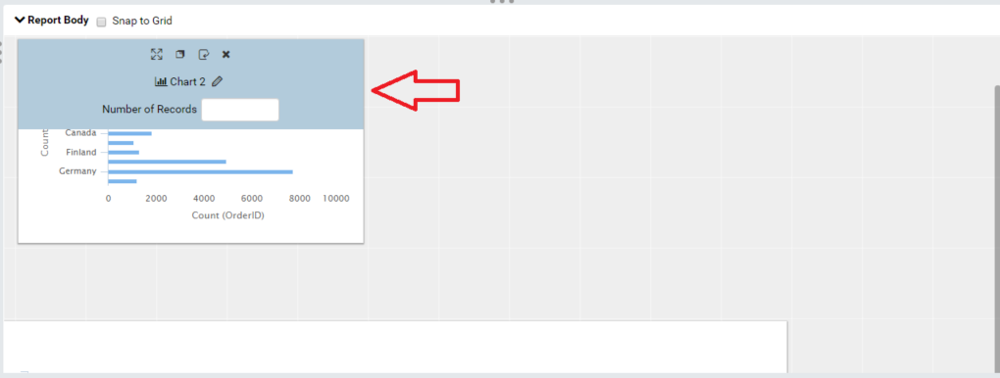
Once this navigation panel is present, click in any empty space on the panel and drag anywhere in the report body and the tile will move to the new location.
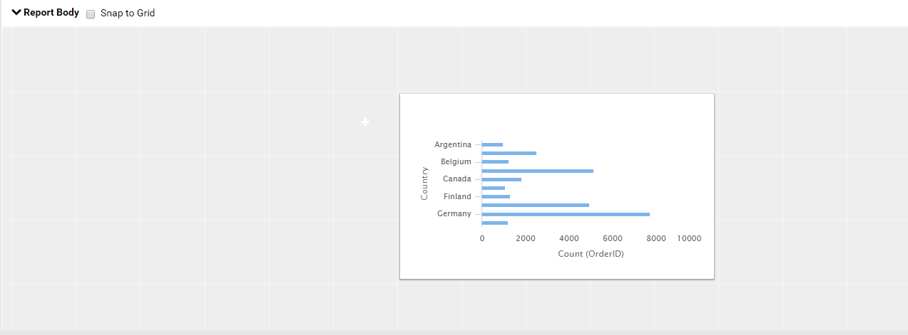
{kind=link}
If you wish to return to Configuration Mode, locate the appropriate
button on the panel navigation bar.
More Advanced Report Part Features¶
It’s great that we can create a simple bar chart with just a few click-and-drags of the mouse but there’s so much more we can do with our reporting tool. On the tile that we just created, return to Configuration Mode and add ShipCity and ShipAddress to our X-Axis box.
{kind=link}
As you add fields to the X-Axis box, you’ll see that the graph on the right redraws itself to a smaller (more refined) data set. When you add ShipCity, our query narrows to Countries with ship cities. When we add ShipAddress, our query narrows to countries with ship cities that have ship addresses. Therefore, order does matter.
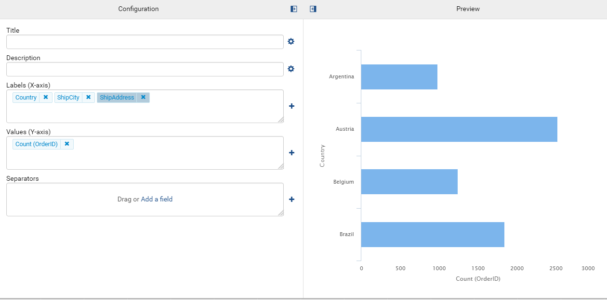
Drill-Downs¶
Since we have a more expressively defined chart, we can drill down to hone in on more detailed information. For instance, if we wanted to see the OrderID count for each city in Argentina, we can drill down to the data without creating a separate report part. To drill down, simply click on the bar in the chart that you want more detailed information from. Let’s click on Brazil’s bar on the preview panel.
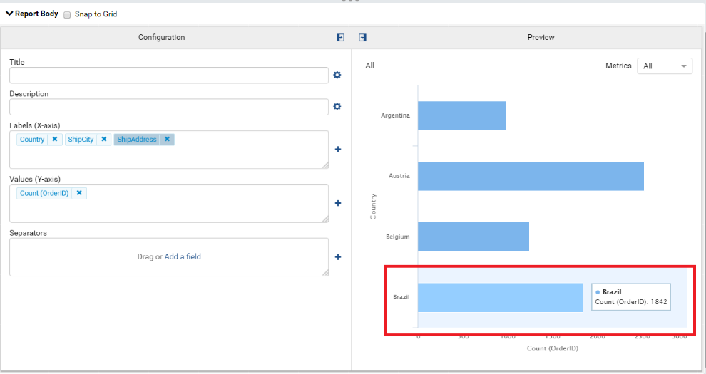
Now we have a chart displaying the count of OrderIDs in each city of Brazil. Let’s click on Rio de Janeiro.
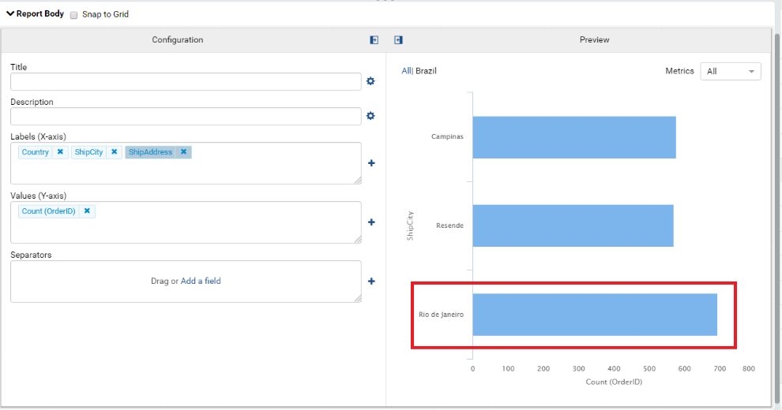
Now we have a chart displaying the count of OrderIds in for each ship address in Rio de Janeiro! To navigate back to higher levels of the drill-down, follow the breadcrumb links in the top left-hand corner of the preview panel. If you don’t see the breadcrumb links, hover over the preview panel. This functionality works out of configuration mode and anywhere where the report part is used.
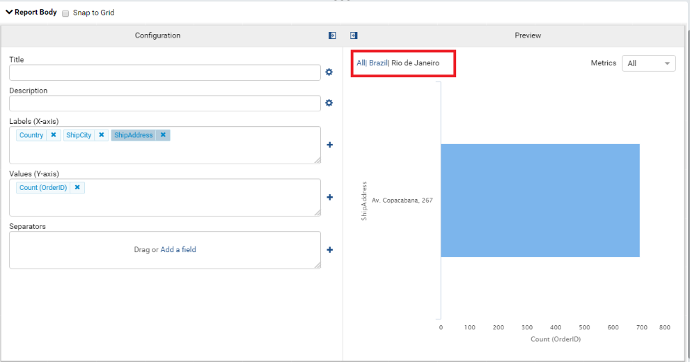
Adding More Features to Your Report¶
{kind=link}
There are numerous options to format your data to create a rich user experience. For instance, you could add Custom URLs, Alternative Texts, and even trigger JavaScript when a data label is clicked. All are documented on the Wiki.
For this example, we will embed a simple JavaScript script.
Select Country in our X-Axis box.
Navigate to the Field Properties pane on the far right and navigate to the Data Formatting Section.
Click on the gear beside Embedded Javascript.**
Type the following code in the Embedded Javascript Action Settings and press OK:
alert("hello! you've clicked on a country");
In the country drilldown, click on the Argentina title on the X-Axis and our JavaScript fires.
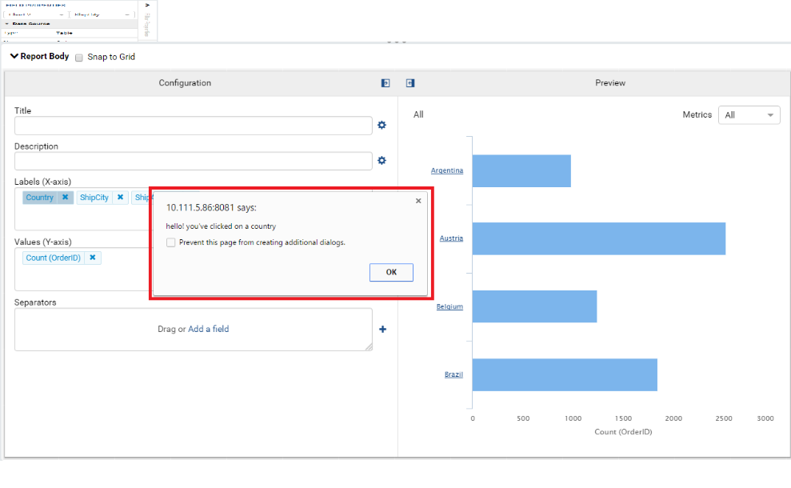
{kind=link}
While there are other report part types, our reporting tool is designed to work intuitively for each type by following similar steps outlined above.
Moving Forward: Saving and Permissions¶
While there are other report part types, our reporting tool is designed to work intuitively for each type by following similar steps outlined above. More tutorials and live walkthroughs may be made available upon request.
Saving¶
Saving with our reporting tool is intuitive. Locate the Save button at the top right side of the screen and click it.
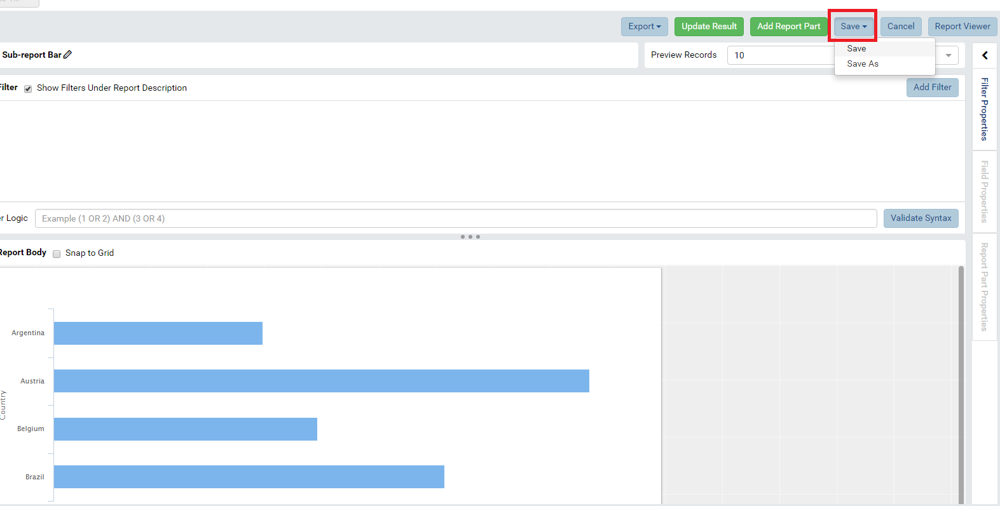
If you have saved previously, a dropdown will appear with the options “Save,” where you overwrite the existing Save file, and “Save As” where you create a new report with the information built in the current report. As you can see in the image above, this report has been saved before. The image below shows the Save dialogue if this is your first time saving.
{kind=link}
Let’s fill in our relevant information.
- For Report Name, simply type in the box.
- For the “Save As” dropdown, you can select either to save your workspace as a Report or a Template. Reports are generally completed data visualizations that can stand alone as a useful tool. Templates, on the other hand, are generally used when your data visualizations are partially implemented and you wish to reuse the workspace setup in later reports.
- Categories are the locations that you wish for users to navigate to locate your report. Categories can be selected via the dropdown or you can click on the grayed out text and begin typing the name of the category and Category name suggestions will appear to allow you to click and choose. If you have permission to create a new Category, our reporting tool will notify you with a message that says “[your category name] (Enter to create a new Category)” when you type a nonexistent Category name in the box. Simply press enter to create the new Category.
Sub-categories provide added structure within a Category. Their functionality works the same as a Category.
Access Permissions¶
{kind=link}
To modify report access, expand the blue left-hand panel by clicking
the drawer/hamburger in the top left-hand corner.
{kind=link}
Navigate to the Access button at the bottom of the list.
Now that we’re on the access page, we can note the name of the report, the owner, and all access rights currently shared.
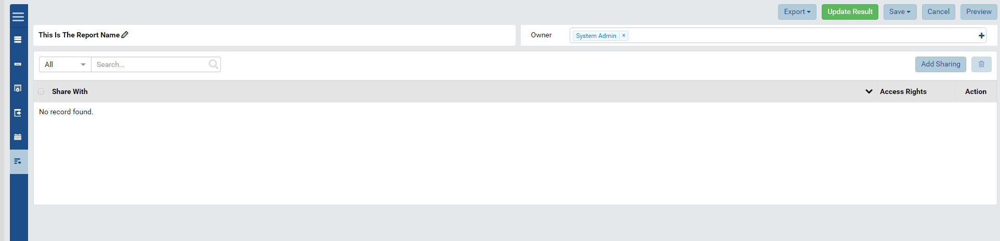
To add sharing, click the Add Sharing button on the right-hand side. Use the dropdowns to specify the user/role you wish to share with and the access rights you wish to grant. Since we’re using data that is public knowledge, let’s give everyone full access to this report. To ensure that the access right is added, click the checkbox on the left. This checkbox allows us to define several permissions to our reports and grant/deny them when necessary. Apply our changes by clicking Update Result.
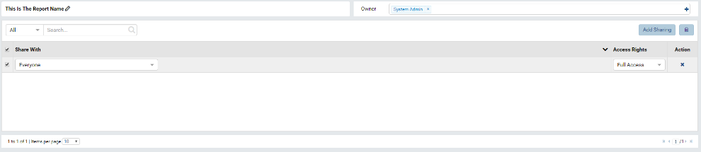
A few notes about sharing:
- If a user has access to a report, he/she has access to the report category. Otherwise, they are unaware of the category.
- If a user has access to a report but lacks access to a data source, the report appears but the report does not show information.
- If a user has access to a report but lacks access to a data source, he has access to the report category.
- To make a report, you must have a data source specified.
- If you don’t use the data source specified, access to the content of the report is still restricted based on the specified data source.